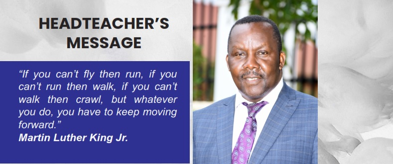

The spirit of Mapeera continues to shine great in all our work. He must be
proud where he is that his resting place has not only turned out as a giant school but also a beacon
of success to the young generation. God will always be good. I am thrilled to welcome all our dear
visitors, students, parents, well-wishers and staff to Kisubi Mapeera Secondary school. Despite all the
challenges experienced due to the COVID Pandemic, I am pleased to inform you that we have settled
in well and are still continuing to settle in. This has been possible through our unwavering resilience and
perseverance. We are indeed the chosen few to have overcome such biting times all in our own ways.
God is still working in us to steer this institution to unimaginable heights. As institution, the pandemic
was a test of our limits and how far we can quickly pick ourselves during such dark days. And yet amid
this uncertainty, we were able to trudge on and give solace and a place of healing to our students in the
gift of education. This is a huge responsibility for us as educators, students and parents to withstand and
maintain a strong demeanor even in the face of hard times, this we can gain through humbling ourselves
and reflecting on how far we have come. Only then can we be able to confront the future with a clear
mindset. During the pandemic, many of us felt pulled, stretched and bent. But what counts to date is
how we maneuvered and are now walking in the direction of our dreams. How we moved on is what
counts now not what we went through.
At Kisubi-Mapeera S.S, we aim to provide a broad and balanced education for all the children within a
happy, stimulating and healthy environment. We want each child to achieve the best he or she can. The
expertise of parental nature of our staff continues to flourish with commitment in the pursuit of success
of our goals and vision. Our governing body plays an essential role in the development and success of
the school. Parents work with us in partnership and we have a thriving parent’s teachers’ Association
whose members work extremely hard for the smooth running of the school.
Ddamulira Joseph Ssewakiryanga Kawuma (Owek.)
HeadMaster